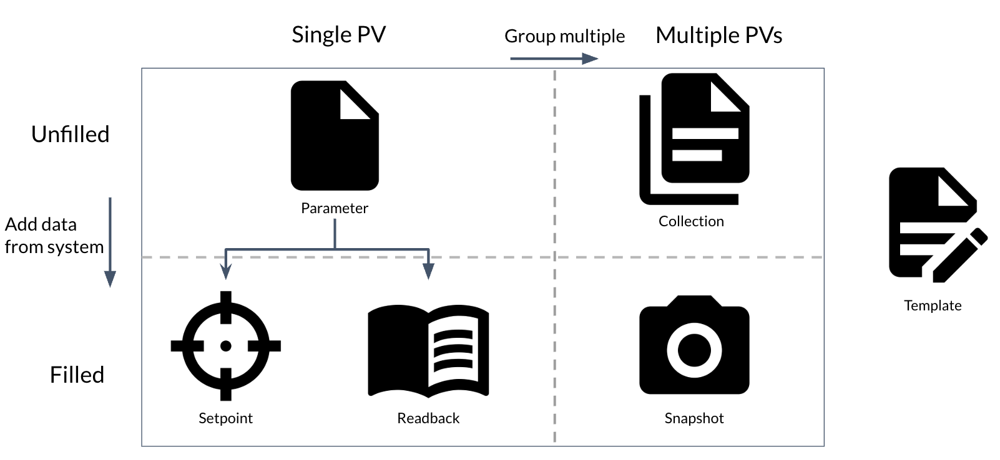

Data Model
The data model is central to the operation of superscore. Data is stored in one
of six main dataclasses. These dataclasses can be split into two main categories:
Unfilled: Simply specifying the PVs to record
Filled: Holding PV-Data pairs, with data values being pulled from the EPICS controls system
The relationships between these dataclasses are summarized in Figure 1:

Parameter
The Parameter Setpoint Readback
Setpoint
A Setpoint can be written back to the system.
Setpoints can have an associated Readback.
Readback
A Readback cannot be written back to the system.
Readback Setpoint Readback
Collection
A Collection Parameter Collection Collection Collection Collection Snapshot
Snapshot
A Snapshot Collection Setpoint Readback Snapshot Collection Collection `
Full Dataclass UML diagram
digraph "classes" {
rankdir=BT
charset="utf-8"
bgcolor=transparent
"superscore.model.Collection" [color="black", fontcolor="black", label=<<table border="0" align="left" tooltip="Collection" width="0" cellpadding="0">
<tr><td border="1" href="./superscore.model.html#superscore.model.Collection" tooltip="Collection" target="_top"><b>Collection</b></td></tr>
<tr><td align="left" tooltip=""><b>Attributes:</b></td></tr>
<tr><td align="left" href="./superscore.model.html#superscore.model.Collection.all_tags " target="_top" tooltip="Collection.all_tags : ClassVar[Set]">all_tags : ClassVar[Set]</td></tr>
<tr><td align="left" href="./superscore.model.html#superscore.model.Collection.children " target="_top" tooltip="Collection.children : List[Union[UUID, Parameter, Collection]]">children : List[Union[UUID, Parameter, Collection]]</td></tr>
<tr><td align="left" href="./superscore.model.html#superscore.model.Collection.meta_pvs " target="_top" tooltip="Collection.meta_pvs : ClassVar[List[Parameter]]">meta_pvs : ClassVar[List[Parameter]]</td></tr>
<tr><td align="left" href="./superscore.model.html#superscore.model.Collection.tags " target="_top" tooltip="Collection.tags : Set">tags : Set</td></tr>
<tr><td align="left" href="./superscore.model.html#superscore.model.Collection.title " target="_top" tooltip="Collection.title : str">title : str</td></tr>
<tr><td align="left" tooltip=""><b>Methods:</b></td></tr>
<tr><td align="left" href="./superscore.model.html#superscore.model.Collection.swap_to_uuids" target="_top" tooltip="Collection.swap_to_uuids">swap_to_uuids(): List[Entry]</td></tr></table>>, shape="record", style="solid", URL="./superscore.model.html#superscore.model.Collection"];
"superscore.model.Entry" [color="black", fontcolor="black", label=<<table border="0" align="left" tooltip="Entry" width="0" cellpadding="0">
<tr><td border="1" href="./superscore.model.html#superscore.model.Entry" tooltip="Entry" target="_top"><b>Entry</b></td></tr>
<tr><td align="left" tooltip=""><b>Attributes:</b></td></tr>
<tr><td align="left" href="./superscore.model.html#superscore.model.Entry.creation_time " target="_top" tooltip="Entry.creation_time : datetime">creation_time : datetime</td></tr>
<tr><td align="left" href="./superscore.model.html#superscore.model.Entry.description " target="_top" tooltip="Entry.description : str">description : str</td></tr>
<tr><td align="left" href="./superscore.model.html#superscore.model.Entry.uuid " target="_top" tooltip="Entry.uuid : UUID">uuid : UUID</td></tr>
<tr><td align="left" tooltip=""><b>Methods:</b></td></tr>
<tr><td align="left" href="./superscore.model.html#superscore.model.Entry.swap_to_uuids" target="_top" tooltip="Entry.swap_to_uuids">swap_to_uuids(): List[Union[Entry, UUID]]</td></tr>
<tr><td align="left" href="./superscore.model.html#superscore.model.Entry.validate" target="_top" tooltip="Entry.validate">validate(toplevel: bool): ValidationResult</td></tr></table>>, shape="record", style="solid", URL="./superscore.model.html#superscore.model.Entry"];
"superscore.model.Nestable" [color="black", fontcolor="black", label=<<table border="0" align="left" tooltip="Nestable" width="0" cellpadding="0">
<tr><td border="1" href="./superscore.model.html#superscore.model.Nestable" tooltip="Nestable" target="_top"><b>Nestable</b></td></tr>
<tr><td align="left" tooltip=""><b>Attributes:</b></td></tr>
<tr><td align="left" href="./superscore.model.html#superscore.model.Nestable.children " target="_top" tooltip="Nestable.children : List[Union[UUID, Entry]]">children : List[Union[UUID, Entry]]</td></tr>
<tr><td align="left" href="./superscore.model.html#superscore.model.Nestable.uuid " target="_top" tooltip="Nestable.uuid : UUID">uuid : UUID</td></tr>
<tr><td align="left" tooltip=""><b>Methods:</b></td></tr>
<tr><td align="left" href="./superscore.model.html#superscore.model.Nestable.has_cycle" target="_top" tooltip="Nestable.has_cycle">has_cycle(parents): bool</td></tr>
<tr><td align="left" href="./superscore.model.html#superscore.model.Nestable.validate" target="_top" tooltip="Nestable.validate">validate(toplevel: bool): ValidationResult</td></tr>
<tr><td align="left" href="./superscore.model.html#superscore.model.Nestable.walk_children" target="_top" tooltip="Nestable.walk_children">walk_children(): Generator[Any, None, None]</td></tr></table>>, shape="record", style="solid", URL="./superscore.model.html#superscore.model.Nestable"];
"superscore.model.Parameter" [color="black", fontcolor="black", label=<<table border="0" align="left" tooltip="Parameter" width="0" cellpadding="0">
<tr><td border="1" href="./superscore.model.html#superscore.model.Parameter" tooltip="Parameter" target="_top"><b>Parameter</b></td></tr>
<tr><td align="left" tooltip=""><b>Attributes:</b></td></tr>
<tr><td align="left" href="./superscore.model.html#superscore.model.Parameter.abs_tolerance " target="_top" tooltip="Parameter.abs_tolerance : Optional[float]">abs_tolerance : Optional[float]</td></tr>
<tr><td align="left" href="./superscore.model.html#superscore.model.Parameter.pv_name " target="_top" tooltip="Parameter.pv_name : str">pv_name : str</td></tr>
<tr><td align="left" href="./superscore.model.html#superscore.model.Parameter.read_only " target="_top" tooltip="Parameter.read_only : bool">read_only : bool</td></tr>
<tr><td align="left" href="./superscore.model.html#superscore.model.Parameter.readback " target="_top" tooltip="Parameter.readback : Optional[Parameter]">readback : Optional[Parameter]</td></tr>
<tr><td align="left" href="./superscore.model.html#superscore.model.Parameter.rel_tolerance " target="_top" tooltip="Parameter.rel_tolerance : Optional[float]">rel_tolerance : Optional[float]</td></tr>
<tr><td align="left" tooltip=""><b>Methods:</b></td></tr>
<tr><td align="left" href="./superscore.model.html#superscore.model.Parameter.validate" target="_top" tooltip="Parameter.validate">validate(toplevel: bool): ValidationResult</td></tr></table>>, shape="record", style="solid", URL="./superscore.model.html#superscore.model.Parameter"];
"superscore.model.Readback" [color="black", fontcolor="black", label=<<table border="0" align="left" tooltip="Readback" width="0" cellpadding="0">
<tr><td border="1" href="./superscore.model.html#superscore.model.Readback" tooltip="Readback" target="_top"><b>Readback</b></td></tr>
<tr><td align="left" tooltip=""><b>Attributes:</b></td></tr>
<tr><td align="left" href="./superscore.model.html#superscore.model.Readback.abs_tolerance " target="_top" tooltip="Readback.abs_tolerance : Optional[float]">abs_tolerance : Optional[float]</td></tr>
<tr><td align="left" href="./superscore.model.html#superscore.model.Readback.data " target="_top" tooltip="Readback.data : Optional[AnyEpicsType]">data : Optional[AnyEpicsType]</td></tr>
<tr><td align="left" href="./superscore.model.html#superscore.model.Readback.pv_name " target="_top" tooltip="Readback.pv_name : str">pv_name : str</td></tr>
<tr><td align="left" href="./superscore.model.html#superscore.model.Readback.rel_tolerance " target="_top" tooltip="Readback.rel_tolerance : Optional[float]">rel_tolerance : Optional[float]</td></tr>
<tr><td align="left" href="./superscore.model.html#superscore.model.Readback.severity" target="_top" tooltip="Readback.severity">severity</td></tr>
<tr><td align="left" href="./superscore.model.html#superscore.model.Readback.status" target="_top" tooltip="Readback.status">status</td></tr>
<tr><td align="left" href="./superscore.model.html#superscore.model.Readback.timeout " target="_top" tooltip="Readback.timeout : Optional[float]">timeout : Optional[float]</td></tr>
<tr><td align="left" tooltip=""><b>Methods:</b></td></tr>
<tr><td align="left" href="./superscore.model.html#superscore.model.Readback.from_parameter" target="_top" tooltip="Readback.from_parameter">from_parameter(origin: Parameter, data: AnyEpicsType, status: Status, severity: Severity, timeout: Optional[float]): Readback</td></tr></table>>, shape="record", style="solid", URL="./superscore.model.html#superscore.model.Readback"];
"superscore.model.Root" [color="black", fontcolor="black", label=<<table border="0" align="left" tooltip="Root" width="0" cellpadding="0">
<tr><td border="1" href="./superscore.model.html#superscore.model.Root" tooltip="Root" target="_top"><b>Root</b></td></tr>
<tr><td align="left" tooltip=""><b>Attributes:</b></td></tr>
<tr><td align="left" href="./superscore.model.html#superscore.model.Root.entries " target="_top" tooltip="Root.entries : List[Entry]">entries : List[Entry]</td></tr>
<tr><td align="left" href="./superscore.model.html#superscore.model.Root.uuid " target="_top" tooltip="Root.uuid : UUID">uuid : UUID</td></tr></table>>, shape="record", style="solid", URL="./superscore.model.html#superscore.model.Root"];
"superscore.model.Setpoint" [color="black", fontcolor="black", label=<<table border="0" align="left" tooltip="Setpoint" width="0" cellpadding="0">
<tr><td border="1" href="./superscore.model.html#superscore.model.Setpoint" tooltip="Setpoint" target="_top"><b>Setpoint</b></td></tr>
<tr><td align="left" tooltip=""><b>Attributes:</b></td></tr>
<tr><td align="left" href="./superscore.model.html#superscore.model.Setpoint.data " target="_top" tooltip="Setpoint.data : Optional[AnyEpicsType]">data : Optional[AnyEpicsType]</td></tr>
<tr><td align="left" href="./superscore.model.html#superscore.model.Setpoint.pv_name " target="_top" tooltip="Setpoint.pv_name : str">pv_name : str</td></tr>
<tr><td align="left" href="./superscore.model.html#superscore.model.Setpoint.readback " target="_top" tooltip="Setpoint.readback : Optional[Readback]">readback : Optional[Readback]</td></tr>
<tr><td align="left" href="./superscore.model.html#superscore.model.Setpoint.severity" target="_top" tooltip="Setpoint.severity">severity</td></tr>
<tr><td align="left" href="./superscore.model.html#superscore.model.Setpoint.status" target="_top" tooltip="Setpoint.status">status</td></tr>
<tr><td align="left" tooltip=""><b>Methods:</b></td></tr>
<tr><td align="left" href="./superscore.model.html#superscore.model.Setpoint.from_parameter" target="_top" tooltip="Setpoint.from_parameter">from_parameter(origin: Parameter, data: AnyEpicsType, status: Status, severity: Severity): Setpoint</td></tr>
<tr><td align="left" href="./superscore.model.html#superscore.model.Setpoint.validate" target="_top" tooltip="Setpoint.validate">validate(toplevel: bool): ValidationResult</td></tr></table>>, shape="record", style="solid", URL="./superscore.model.html#superscore.model.Setpoint"];
"superscore.model.Severity" [color="black", fontcolor="black", label=<<table border="0" align="left" tooltip="Severity" width="0" cellpadding="0">
<tr><td border="1" href="./superscore.model.html#superscore.model.Severity" tooltip="Severity" target="_top"><b>Severity</b></td></tr>
<tr><td align="left" tooltip=""><b>Attributes:</b></td></tr>
<tr><td align="left" href="./superscore.model.html#superscore.model.Severity.name" target="_top" tooltip="Severity.name">name</td></tr></table>>, shape="record", style="solid", URL="./superscore.model.html#superscore.model.Severity"];
"superscore.model.Snapshot" [color="black", fontcolor="black", label=<<table border="0" align="left" tooltip="Snapshot" width="0" cellpadding="0">
<tr><td border="1" href="./superscore.model.html#superscore.model.Snapshot" tooltip="Snapshot" target="_top"><b>Snapshot</b></td></tr>
<tr><td align="left" tooltip=""><b>Attributes:</b></td></tr>
<tr><td align="left" href="./superscore.model.html#superscore.model.Snapshot.children " target="_top" tooltip="Snapshot.children : List[Union[UUID, Readback, Setpoint, Snapshot]]">children : List[Union[UUID, Readback, Setpoint, Snapshot]]</td></tr>
<tr><td align="left" href="./superscore.model.html#superscore.model.Snapshot.meta_pvs " target="_top" tooltip="Snapshot.meta_pvs : List[Readback]">meta_pvs : List[Readback]</td></tr>
<tr><td align="left" href="./superscore.model.html#superscore.model.Snapshot.origin_collection " target="_top" tooltip="Snapshot.origin_collection : Optional[Union[UUID, Collection]]">origin_collection : Optional[Union[UUID, Collection]]</td></tr>
<tr><td align="left" href="./superscore.model.html#superscore.model.Snapshot.tags " target="_top" tooltip="Snapshot.tags : Set">tags : Set</td></tr>
<tr><td align="left" href="./superscore.model.html#superscore.model.Snapshot.title " target="_top" tooltip="Snapshot.title : str">title : str</td></tr>
<tr><td align="left" tooltip=""><b>Methods:</b></td></tr>
<tr><td align="left" href="./superscore.model.html#superscore.model.Snapshot.swap_to_uuids" target="_top" tooltip="Snapshot.swap_to_uuids">swap_to_uuids(): List[Union[Entry, UUID]]</td></tr>
<tr><td align="left" href="./superscore.model.html#superscore.model.Snapshot.validate" target="_top" tooltip="Snapshot.validate">validate(toplevel: bool): ValidationResult</td></tr></table>>, shape="record", style="solid", URL="./superscore.model.html#superscore.model.Snapshot"];
"superscore.model.Status" [color="black", fontcolor="black", label=<<table border="0" align="left" tooltip="Status" width="0" cellpadding="0">
<tr><td border="1" href="./superscore.model.html#superscore.model.Status" tooltip="Status" target="_top"><b>Status</b></td></tr>
<tr><td align="left" tooltip=""><b>Attributes:</b></td></tr>
<tr><td align="left" href="./superscore.model.html#superscore.model.Status.name" target="_top" tooltip="Status.name">name</td></tr></table>>, shape="record", style="solid", URL="./superscore.model.html#superscore.model.Status"];
"superscore.model.Template" [color="black", fontcolor="black", label=<<table border="0" align="left" tooltip="Template" width="0" cellpadding="0">
<tr><td border="1" href="./superscore.model.html#superscore.model.Template" tooltip="Template" target="_top"><b>Template</b></td></tr>
<tr><td align="left" tooltip=""><b>Attributes:</b></td></tr>
<tr><td align="left" href="./superscore.model.html#superscore.model.Template.placeholders " target="_top" tooltip="Template.placeholders : dict[str, str]">placeholders : dict[str, str]</td></tr>
<tr><td align="left" href="./superscore.model.html#superscore.model.Template.template_collection " target="_top" tooltip="Template.template_collection : Union[Collection, UUID]">template_collection : Union[Collection, UUID]</td></tr>
<tr><td align="left" href="./superscore.model.html#superscore.model.Template.title " target="_top" tooltip="Template.title : str">title : str</td></tr>
<tr><td align="left" tooltip=""><b>Methods:</b></td></tr>
<tr><td align="left" href="./superscore.model.html#superscore.model.Template.swap_to_uuids" target="_top" tooltip="Template.swap_to_uuids">swap_to_uuids(): List[Union[Entry, UUID]]</td></tr></table>>, shape="record", style="solid", URL="./superscore.model.html#superscore.model.Template"];
"superscore.model.Collection" -> "superscore.model.Entry" [arrowhead="empty", arrowtail="none"];
"superscore.model.Collection" -> "superscore.model.Nestable" [arrowhead="empty", arrowtail="none"];
"superscore.model.Parameter" -> "superscore.model.Entry" [arrowhead="empty", arrowtail="none"];
"superscore.model.Readback" -> "superscore.model.Entry" [arrowhead="empty", arrowtail="none"];
"superscore.model.Setpoint" -> "superscore.model.Entry" [arrowhead="empty", arrowtail="none"];
"superscore.model.Snapshot" -> "superscore.model.Entry" [arrowhead="empty", arrowtail="none"];
"superscore.model.Snapshot" -> "superscore.model.Nestable" [arrowhead="empty", arrowtail="none"];
"superscore.model.Template" -> "superscore.model.Entry" [arrowhead="empty", arrowtail="none"];
"superscore.model.Readback" -> "superscore.model.Severity" [arrowhead="vee", arrowtail="none", fontcolor="green", label="severity", style="solid"];
"superscore.model.Setpoint" -> "superscore.model.Severity" [arrowhead="vee", arrowtail="none", fontcolor="green", label="severity", style="solid"];
"superscore.model.Readback" -> "superscore.model.Status" [arrowhead="vee", arrowtail="none", fontcolor="green", label="status", style="solid"];
"superscore.model.Setpoint" -> "superscore.model.Status" [arrowhead="vee", arrowtail="none", fontcolor="green", label="status", style="solid"];
"superscore.model.Collection" -> "superscore.model.Snapshot" [arrowhead="odiamond", arrowtail="none", fontcolor="green", label="origin_collection", style="solid"];
}
Classes of superscore.model
Open in a new tab
{kind=link}
{kind=link}
{kind=link}
{kind=link}
{kind=link}
{kind=link}